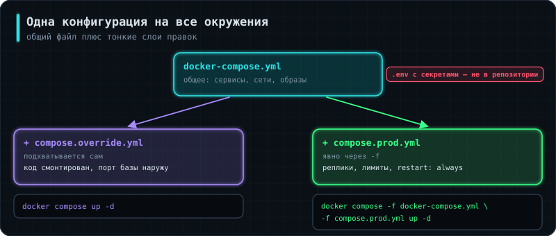

Аналогия: один чертёж здания и отдельные листы правок под конкретную площадку — а не пять полных чертежей, которые начинают расходиться между собой с первого же изменения.
Копировать compose.yaml в compose.prod.yaml — прямой путь к тому, что через месяц окружения будут отличаться неизвестно чем. Compose умеет накладывать файлы друг на друга.
docker compose up -d
# автоматически читает compose.yaml + compose.override.yaml (разработка)
docker compose -f compose.yaml -f compose.prod.yaml up -d
# явно указанный набор для прода
Файл compose.override.yaml подхватывается автоматически (старые имена docker-compose.yml и docker-compose.override.yml тоже работают, но их не смешивают с новыми) и содержит то, что нужно только при разработке: монтирование кода внутрь контейнера, проброшенный наружу порт базы, подробные логи. В репозиторий он кладётся, а вот .env с реальными значениями — нет (2.5 Бэкенд-сервис, §9).
Профили решают смежную задачу — необязательные сервисы:
pgadmin:
image: dpage/pgadmin4
profiles: ["debug"] # поднимется только с --profile debug
Пара мелочей, о которых стоит знать. Ключ version: в начале файла устарел — современный Compose его игнорирует и выдаёт предупреждение. И логи: без настройки драйвера файл лога контейнера растёт неограниченно, пока не кончится диск:
logging:
driver: json-file
options:
max-size: "10m"
max-file: "3"
Ровно та же проблема, что решает logrotate для обычных сервисов (1.1 Linux, §17).